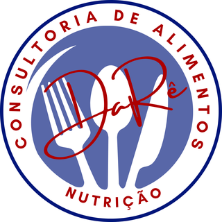
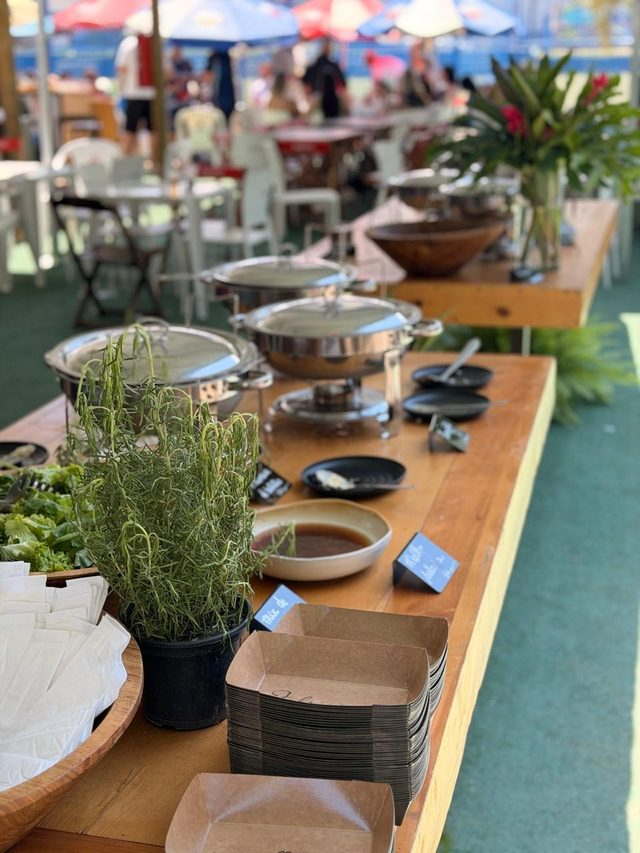
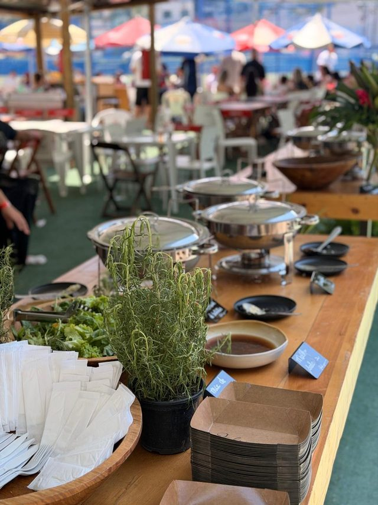
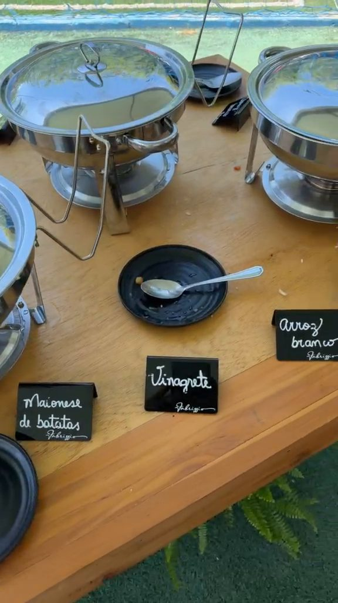
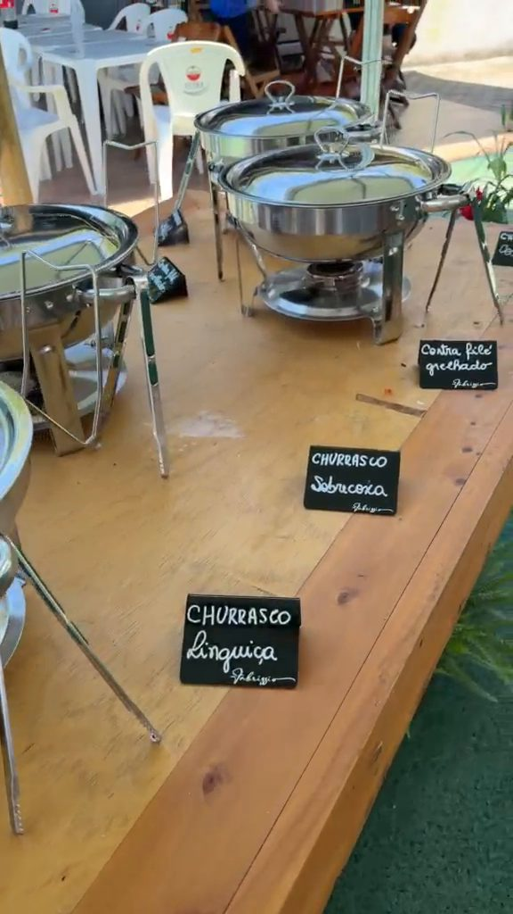
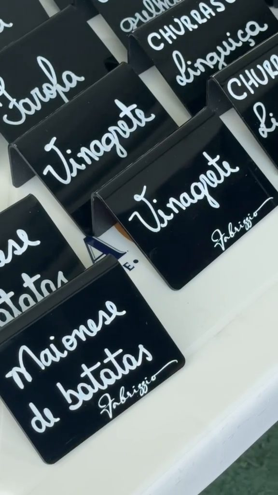
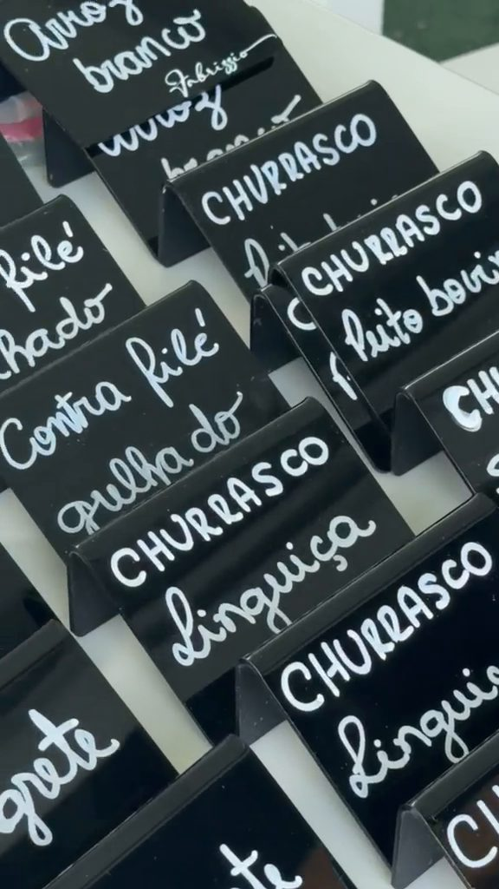
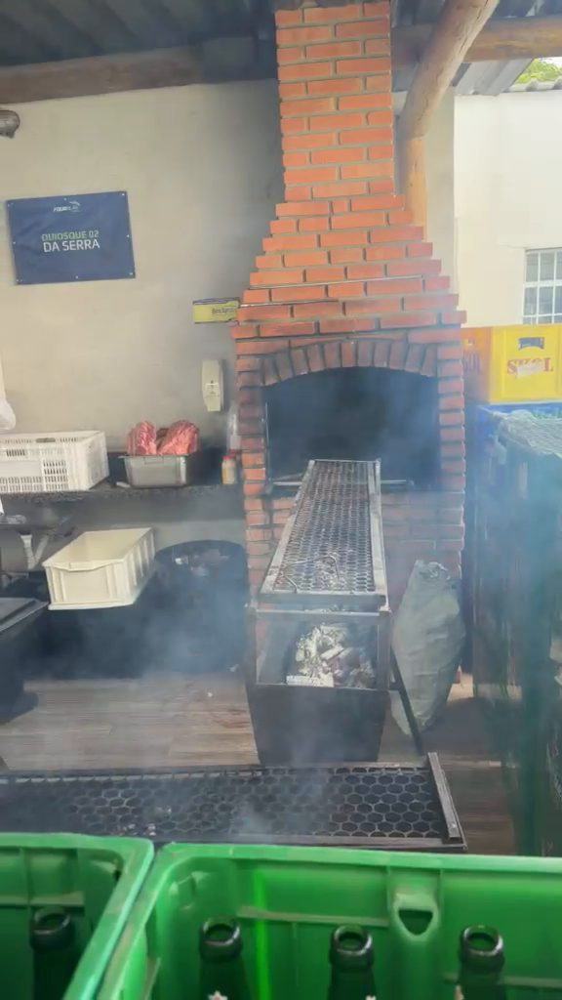
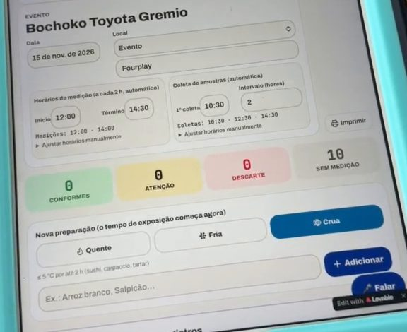
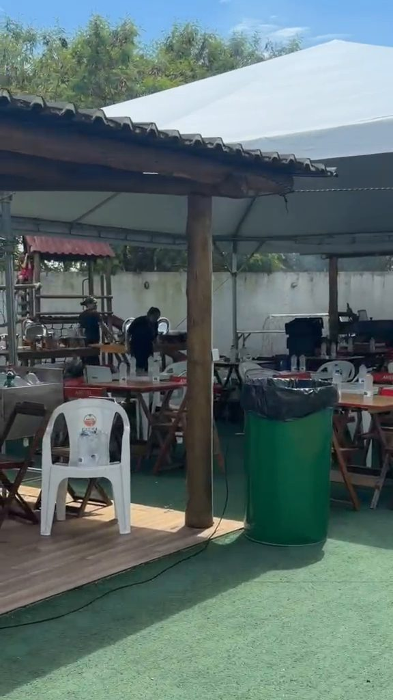

Montagem, filas e churrasqueiros foram pontos fortes. O foco agora: — de — aferições de preparações quentes ficaram abaixo de — antes da abertura. É onde segurança e custo se encontram.
Indicam onde corrigir. Aferições pontuais não bastam para concluir descumprimento do tempo máximo de exposição.
Cada quadrado é uma atividade prevista, por liderança
Fabrício (coordenação geral): resultado parcial. Atuou nos imprevistos, como o reforço da refrigeração, mas persistiram divergências de horário e de integração.
Aferições às 11h52 (acompanhamentos) e 12h00 (carnes), antes da abertura
Refrigeração e reserva de gelo
A equipe resolveu o imprevisto na hora. Agora é transformar a solução em rotina: avaliar a capacidade do equipamento, a carga térmica e deixar gelo e equipamento complementar reservados.
Planejado × observado
Previsto × observado × proposto
Quais preparações tiveram amostra coletada
Da correção ao resultado financeiro
Críticas e altas antes do próximo evento
Fotos e quadros de vídeos feitos no próprio evento, com o que se vê em cada imagem









Imagens reais do evento (fotos e quadros de vídeos), sem alterações além de corte e redução de tamanho. A captura do tablet foi recortada para não exibir o código do evento nem contatos.
O que a DaRê vai fazer para entregar ainda mais segurança
A caixa fica reservada às amostras e só é aberta para guardá-las. A temperatura é conferida e anotada ao longo do evento. Pela CVS 5/2013 (art. 52), amostras de alimentos distribuídos refrigerados ficam a até 4 °C e as de alimentos distribuídos quentes, congeladas a −18 °C. Se o evento exigir as duas condições, a caixa precisa ser dimensionada para isso (por exemplo, compartimentos ou caixas separadas).
Com o briefing antecipado, a consultora prepara os materiais de uso durante o evento: planilhas de temperatura e de tempo, etiquetas, rotina de amostras e checklist de gelo e réchauds. Menos improviso no dia.
Pontos fortes confirmados